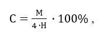

Додаток Е Механізація технологічних процесів технічного обслуговування і ремонту локомотивів в депо і локомотиворемонтних заводах
Під
механізацією технологічних процесів технічного обслуговування (ТО) і ремонту
(ПР) локомотивів в депо розуміється повна або часткова заміна ручної праці
машинною в тій частині технологічного процесу, в якій відбувається зміна
технічного стану локомотивів, при збереженні участі людини в управлінні
машиною.
Механізацію
технологічних процесів поділяють на часткову і повну.
Часткова
механізація пов'язана з механізацією окремих рухів і операцій, за рахунок якої
полегшується праця і прискорюється виконання відповідних технологічних
операцій.
Повна (або
комплексна) механізація охоплює всі основні, допоміжні і транспортні операції
технологічного процесу і являє собою практично повне усунення ручної праці і
заміну його машинним. Діяльність робочого зводиться до управління машиною,
регулювання її роботи і контролю за якістю виконання технологічного процесу.
Комплексна механізація є передумовою для автоматизації та роботизації
технологічних процесів, що є вищим ступенем механізації.
Автоматизація
технологічного процесу дозволяє виключити ручну працю. Тут у функції робочого
входять спостереження за ходом технологічного процесу, контроль за якістю його
виконання і регулювально-налагоджувальні роботи.
Автоматизація
технологічних процесів передбачає автоматизацію деяких операцій управління
машинами і механізмами при повній (комплексній) механізації всіх трудомістких
операцій технологічного процесу.
Механізація
технологічних процесів ТО і ПР тягового рухомого складу має важливе
техніко-економічне і соціальне значення, яке виражається в зменшенні чисельності
ремонтних робітників за рахунок зниження трудомісткості робіт по ТО і ПР
локомотивів, підвищення якості виконання ТО і ПР, поліпшенні умов праці
ремонтників.
Зниження
трудомісткості робіт по ТО і ПР досягається за рахунок скорочення часу виконання
відповідних операцій в результаті впровадження засобів
механізації.
Так,
використання мийної машини ММД-13М для мийки рухомого складу дозволяє скоротити
трудомісткість виконання цих робіт в 7,5 рази, електромеханічного підйомника
типу А266 - в 2 рази, гайковерта торцевих осьових гайок А867.01 - в 1,5 рази,
стенду для розбирання колісних пар електропоїздів. Типу А1257. - в 2 рази і
т.д.
Великий
вплив механізація технологічних процесів надає на якість виконання ТО і ПР.
Особливо це характерно для контрольно-діагностичних, мийно-заправних,
збирально-мийних, монтажно-демонтажних робіт.
У свою
чергу поліпшення якості сприяє підвищенню надійності роботи локомотива на лінії,
скорочення потоку відмов і, отже, скорочення обсягу виконуваних робіт, зменшення
потрібного числа ремонтників, часу простою локомотивів в ТО і ремонті ,і в
очікуванні ТО і ремонту, збільшення часу роботи локомотива на
лінії.
Поліпшення
умов праці ремонтників є одним з основних завдань, що вирішуються при
механізації технологічних процесів ТО і ПР рухомого складу. Поки що велика
частка технологічних операцій, виконуваних із застосуванням некваліфікованої
ручної праці, головним чином
важкої, одноманітної, стомлюючої і шкідливої для здоров'я ремонтних робітників.
До таких операцій відносяться, перш за все, демонтаж, монтаж і транспортування
вузлів і агрегатів локомотивів всередині депо, прибирання та миття скатоопускної
канави , мийка салонів електропоїздів, дефектоскопія колісних пар та
інші.
Механізація
важких і шкідливих робіт дозволяє знизити число випадків виробничого травматизму
і професійних захворювань у ремонтників і пов'язані з ними втрати робочого
часу.
Соціальне
значення механізації ТО і ПР виражається в поліпшенні умов праці робітників,
зменшення плинності кадрів, у всебічному їх розвитку, і загального підвищенні
культурно-технічного рівня ремонтників.
Поліпшення
умов праці ремонтників при механізації досягається за рахунок організації
робочих місць (вибір і раціональна розстановка технологічного обладнання
відповідно до вимог наукової організації праці). При цьому велике значення має
експлуатаційна технологічність використовуваного обладнання, тобто зручність
його використання при ТО і ПР локомотивів.
Зменшення
плинності кадрів при механізації відбувається за рахунок задоволеності працюючих
характером і умовами праці. Наслідком цього є підвищення продуктивності праці
ремонтних робітників, поліпшення якості виконуваних ними робіт за рахунок
зростання їх професійної кваліфікації.
Перед
початком проведення робіт по механізації технологічних процесів ТО і ПР
локомотивів особливу важливість має оцінка кінцевих результатів механізації,
тобто її вплив на показники діяльності локомотивного депо.
Комплексна
механізація і автоматизація дозволяють:
- знизити
трудомісткість і собівартість ТО і ПР рухомого складу;
-
поліпшити якість їх виконання;
-
скоротити необхідне число ремонтників;
- знизити
простої локомотивів в ТО і ПР;
-
збільшити час роботи локомотивів на лінії;
-
поліпшити показники діяльності локомотивного депо (коефіцієнт технічної
готовності, коефіцієнт випуску та ін.).
В даний
час завдання комплексної механізації виробництва ще далека від свого вирішення.
Тому зараз є актуальним вивчення фактичних рівнів механізації технологічних
процесів ТО і ПР на підприємствах локомотивного господарства. Це дозволить
визначити найбільш ефективні напрямки механізації, виявити зони і ділянки з
найбільшим використанням ручної праці (в тому числі важкого і
некваліфікованого), розробити комплекс заходів щодо підвищення рівня
механізації. При цьому важливо проаналізувати фактичні рівні механізації не
тільки для депо в цілому, але і для окремих його зон, ділянок,
цехів.
За
результатами аналізу можуть бути розроблені плани підвищення рівнів механізації
депо, що дозволяють досягти більшої ефективності проведення ТО і ПP локомотивів,
скоротити число ремонтників, збільшити час роботи локомотивів на
лінії.
В системі
локомотивного господарства розрахунок рівнів механізації проводиться з
використанням «Методики оцінки рівня і ступеня механізації і автоматизації
виробництва ТО і ПP рухомого складу», в основу якої закладено метод визначення
показників механізації виробництва в локомотивних депо. Цей метод базується на
спільному аналізі операцій технологічних процесів і обладнання, яке
застосовується при виконанні цих операцій.
Методика
забезпечує можливість розрахунку показників механізації для робочих місць,
постів, ділянок, підрозділів і в цілому для підприємства.
Оцінка
механізації виробничих процесів проводиться за двома
показниками:
- Рівнем
механізації виробничих процесів,
- Ступеня
механізації виробничих процесів.
Рівень
механізації виробничих процесів визначає частку механізованої праці в загальних
трудовитратах.
Ступінь
механізації виробничих процесів визначає заміщення робочих функцій людини
реально застосовуваним обладнанням в порівнянні з повністю автоматизованим
технологічним процесом.
Кількість
заміщених обладнанням робочих функцій людини визначається «ланковістю»
обладнання. За цим принципом всі засоби механізації підрозділяються на сім
груп:
1) ручні
знаряддя праці, ланковість Z = 0;
2) машини
ручного дії без спеціального джерела енергії, ланковість Z =
1;
3)
механізовані ручні машини з підведенням енергії від спеціального джерела,
ланковість Z = 2;
4)
механізовані машини, ланковість Z = 3;
5)
машини-напівавтомати, ланковість Z = 3,5;
6)
машини-автомати, ланковість Z = 4;
7) гнучкі
автоматизовані виробництва (ГАП), ланковість Z = 5.
Зіставляючи
кількість наявних ланок з максимально можливим, можна оцінити технічний рівень
будь-якої машини з точки зору заміщення людини в процесі
праці.
З
урахуванням специфіки виробничих процесів в локомотивних депо максимальна
ланковість обладнання приймається Z = 4.
У таблиці
Е.1 подано
класифікацію машин за принципом ланковості, дана їх коротка характеристика і
приклади відповідності кожній групі обладнання.
Таблиця Е.1 – Класифікація машин за принципом ланковості, їх коротка характеристика
|
№ п/н |
Найменування |
Ланковість |
Функції,
виконувані машиною |
Функції,
виконувані робочим |
Приклади
технічних засобів, що відносяться до цієї
групи |
|
1 |
Ручний
інструмент |
0 |
|
Виконання
всіх робочих функцій |
Ручний
інструмент, гайкові ключі, викрутки, лінійки |
|
2 |
Машина
ручної дії |
1 |
Передавальний
механізм перетворює задані знаряддю праці зусилля
людини |
Зайнятий
безперервно: задання знаряддю праці необхідних зусиль; просторова
орієнтація і взаємопереміщення машини-знаряддя і предмета праці,
управління процесом |
Механічні
пристрої з ручним приводом; прес, таль, дриль, транспортний візок,
домкрат. Контрольно-діагностичні прилади без підведення зовнішньої
енергії |
|
3 |
Механізована
ручна машина |
2 |
Машина-двигун
джерело руху, власно знаряддя праці, яке перетворює енергію, за допомогою
передавального механізму |
Зайнятий
безперервно: просторова орієнтація і взаємо переміщення машини-знаряддя і
предмета праці, управління процесом |
Механізми
з електро- і гідроприводом: електро-дриль, електроточило,
пневмогайковерти, газові пальники, електропаяльники. Підйомники,
маслороздавальне обладнання, контрольно-діагностичні прилади з підведенням
зовнішньої енергії |
|
4 |
Механізована
машина |
3 |
Машина
двигун джерело руху власно знаряддя праці і предмету праці. Передавальний
механізм перетворює заданий рух знаряддя праці або предмету праці, також
зусилля взаємопереміщення машини знаряддя і предмета
праці |
Зайнятий
безперервно: задання, взаємо-переміщення машини-знаряддя праці і предмету
праці, управління процесом, періодична зміна предмета
праці |
Обладнання
без системи автоматичного управління, універсальні верстати, преси,
автоелектрокари, автонавантажувачі, кран балки, контрольно-діагностичні
стенди, автомобілі |
|
5 |
Машина
напівавтомат |
3,5 |
Додатково
до функції механізованої машини: машина-двигун за допомогою передавального
механізму забезпечує взаємо-переміщення машини-знаряддя і предмета праці.
Контрольно-керуючий пристрій забезпечує роботу машини в автоматичному
режимі протягом основного часу операції |
Робочий
вільний протягом основного часу операції. Періодична зміна предмета праці
і часткове управління процесом. Контроль і заміна знаряддя праці,
піднастройка машини |
Машина
з пристроєм авто-матичного управління технологічним циклом. Автоматичні
роздавальні колонки, автоматичні мийки без конвеєрів, автоматизоване
діагностичне обладнання |
|
6 |
Машина-автомат |
4 |
Додатково
до функцій машини напівавтомата контрольно керуючий пристрій забезпечує
автоматичне повторення робочого циклу при зміні однотипних предметів
праці |
Робочий
вільний протягом часу виконання операції над партією однотипних предметів
праці. Часткове управління процесів, контроль і заміна знарядь праці,
періодична піднастройка машини |
Металорізальні
верстати автомати, гальванічні ванни, сушильні і фарбувальні комплекси,
які налаштовані автоматично. Автоматичні лінії з конвеєром.
роботи-маніпулятори, штабелери з автоматичним
адресуванням |
|
7 |
Гнучкі
автоматизовані виробництва |
5 |
Супер
Ланка забезпечує автоматичну адаптацію системи машин автоматів до
предметів праці при паралельному виготовленні виробів різних
видів |
Робочий
вільний протягом часу виготовлення виробів різних видів. За людиною
зберігається функція технічного обслуговування, а також інженерні функції,
підготовка і коректування керуючих програм для сукупності виробів різних
видів |
Розгалужена
в просторі сукупність доповнюють один одного в технологічних процесах
машин, пов'язаних спільними транспортної і керуючої системами, які
забезпечують одночасне виготовлення виробів з різними технологічними
маршрутами |
Формули
для розрахунку показників механізації ґрунтуються на двох принципових
залежностях (Е.1) і
(Е.2).
Рівень Y
механізації виробничих процесів:
де
Тм - трудомісткість механізованих операцій процесу з застосовуваної
технологічної документації, люд.-хв.
То -
загальна трудомісткість всіх операцій процесу з застосовуваної технологічної
документації, люд.-хв.
Ступінь С
механізації виробничих процесів:

(Е.2)
де М =
1М1 +2М2 + ЗМ3 + 3,5 М3,5 +4
М4;
М1,
М2; М3; М 3,5; М4 - кількість
механізованих операцій, що виконуються із застосуванням обладнання з відповідною
ланковістю;
Н - загальна
кількість операцій.
Розрахунки показників механізації виконують на основі використовуваних робочих технологій ТО і TP рухомого складу. При відсутності робочих технологій, а також при розробці проектів розрахунки показників механізації проводять за типовими технологіям, посібникам, поопераційним нормативам і нормам часу з урахуванням їх коригування у відповідності з використанням в локомотивних депо або застосовуваними в проектах обладнанням і схемою організації робіт .
При відсутності робочих технологій на процеси дільничних робіт ПP по ковальсько-ресорному, слюсарно-механічному, зварювального, малярському, деревообробному ділянках можна проводити по укрупненим технологіям.
Таблиця
Е.2
–
Коди ступеня механізації й автоматизації праці
|
Код
позиції |
Найменування
позиції |
|
1 |
Робітники,
що виконують роботу на автоматах, автоматизованих агрегатах, установках,
апаратах |
|
2 |
Робітники,
що виконують роботу за допомогою машин і
механізмів |
|
3 |
Робітники,
що виконують роботу вручну при машинах і
механізмах |
|
4 |
Робітники,
що виконують роботу вручну не при машинах і
механізмах |
|
5 |
Робітники,
що виконують роботу вручну по налагодженню й ремонту машин і
механізмів |
Примітка. Таблиця створена на основі даних згідно класифікатора професій ДК 003:2010.